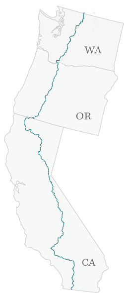
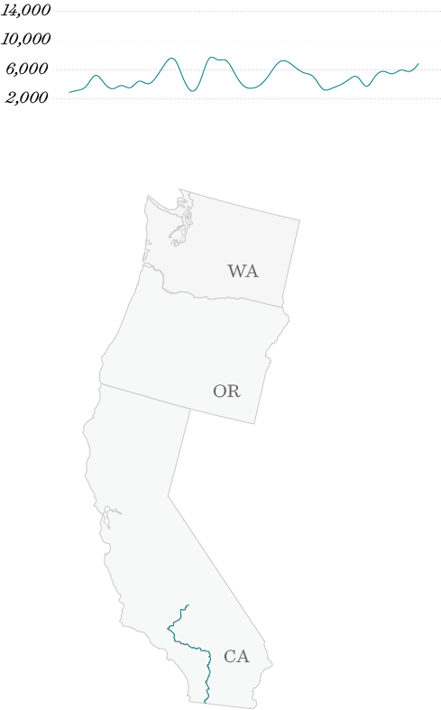

It was a still morning in June and Pepa and I had just stumbled on the finest view we had seen so far. We looked out at a deep blue lake disturbed only by the occasional trout rippling to the surface. Perfectly reflected in the lake were the immense granite cliffs behind it, still painted with snow from the previous winter. We sat there for an hour soaking in all the beauty around us. It was a perfect silence that only wilderness seems to be able to offer. As we began to hike on again, Pepa reflected on everything we had seen in the last week, “I don't know how, but being here has changed me. I don't think I can be the same person after seeing this much beauty.”
I felt the same.
PCT elevation profile (in feet)

From May to October 2014, I continuously hiked 2667 miles from Mexico to Canada along the Pacific Crest Trail. I expected to be immersed in great scenery, but nothing could prepare me for the dreamlike beauty of the High Sierras, the spiritual forests of Oregon, and the grandeur of the Northern Cascades. And while I received the extended periods of solitude I hoped for, I did not anticipate the warmth and selflessness I would also experience from the trail community. Many remarked on how admirable it was to embark on such a journey, but I simply felt humbled that I had such a opportunity to see this beautiful side to our planet and humanity.
I am convinced this is something everyone should have the opportunity to experience. This project is a snapshot of my experience on the trail. It is for friends, for family, for those interested in hiking the trail someday, for those who want to reflect back on the trail, and of course, for myself. There's nothing like being there yourself but I hope it can bring you closer.
The First Step
As with everyone else I spoke with on the trail, the PCT does not begin with the first physical step but the first mental step. At a New Year's party that previous December, I was asked, “What do you expect out of 2014?”. At that point, the only things I knew were that I wanted a change in my career and I had a tingling for adventure.
I had many travels that I had stored away in my head for a moment like this - the Pacific Crest Trail, going back to Patagonia, joining my college roommate in Kenya, a road trip through the South. As it happen all too commonly, these ideas didn't do much but float around in my head for months. When the beginning of March hit, I realized if I wanted to do the PCT this year, I would need to decide soon.
That thought came on a Monday afternoon and kicked off the most emotional week of my life. After work, I had a discussion with my roommates about what we would do with the apartment in this hypothetical situation. That Tuesday, I had a long conversation with my girlfriend, Kaity, about what it would mean for our relationship. I brought the hugely unpopular idea to my parents on Wednesday. By Thursday, even though I hadn't it all out, I knew there was no way I wasn't going to do this. And so by that Friday, I told my manager that I was planning to leave the company in 6 weeks.
Knowing that you need to do something doesn't always mean you know why. I am a strong believer that your gut somehow already knows why before your mind does. It took a couple of weeks to sort out the rationale for my conviction. There was the allure of solitude - a way to remove myself from the noise of everyday life in the city and reflect on the last four years of constant motion. There was the sense of independence - I was ready to take on extended solo traveling for the first time relying only on myself for survival and direction. It felt patriotic in a way - an adventure in my own backyard and a way of experiencing the exotic beauty of my own state and country. And of course there was the thrill of real adventure - living in wilderness offered a raw type of experience that one can find in very few forms in this globally connected society.
But all of this was secondary, the main reason was that it felt right.
Preparation
My final equipment as I started the trail.
I had decided on the PCT but it didn't mean that I knew how to do it or if I could do it.
The two months between my decision and actually getting on the trail continued to be a roller coaster of emotions. I was excited to be embarking on the next chapter of my life yet the more I learned about it and the more I realized how naive and unprepared I was. Who was I, a city boy who occasionally biked and backpacked on weekends, to think that I could walk 20+ miles every day for 5 months? I didn't know anything about how to maintain an athlete's diet. All of my bulky backpacking gear all of a sudden felt amateurish. I knew nothing about wilderness first aid, survival techniques, snow travel, or dealing with heat and dehydration in the desert. I did eventually began to feel comfortable with all of it towards the end but anxiety was a constant companion those days.
Beyond preparing for the trail, I also had to wind down my current life. This meant having a responsible exit strategy at work - making sure my team at work didn't feel lost or betrayed when their manager left. It meant dealing with all of the logistical details of life in a transition - health care, taxes, bills, health check-ups, subletting my apartment, storing my belongings, among many other chores.
It meant trying to enjoying the remaining time with Kaity. She was amazingly supportive and proud which meant so much but also it was clear how hard the distance and unconnectedness would be for our relationship. There were lots of tough conversations but we also had lots of fun on going on training hikes, spending days at REI, and taking small wilderness workshops together. We spent a lot of time together that last month and sometimes I felt she was more proactive in my preparation than I was.
It meant telling the news to all of my friends and spending time with everyone before I left. I was floored by the warmth and support I received from friends, family, and coworkers. I had one of the best birthday get togethers of my life with nearly everyone I cared deeply about being there. My co-workers presented me with a beautiful stack of 100+ handwritten letters on my last day of work. My mom, being an traditional asian mom, couldn't provide with much backpacking advice so she did for me the only thing she could do - cook. And she cooked a lot. I think for her, it was her way of showing support and, in her own superstitious way, ensuring my survival on the trail. It was a very bittersweet time of my life feeling like I had the best people around me and knowing that I would have to be leaving all of them for a very long time.
Two months easily felt like not enough time.
Last Days and First Days
At Scout and Frodo's eagerly awaiting our first day on the trail.
The last night of civilization, I just wanted to spend it quietly with Kaity and a few of my closest friends. It was a welcome departure from the nights of grand dinners I was having almost every night the week before with other friends and family. We went back to the apartment and chatted quietly over tea until everyone felt sleepy. I woke up the next morning, said a last goodbye to my roommates and walked to the subway with Kaity. When my train came, we had a bittersweet embrace and I walked on the train and away from my life in the city.
Off I was to SFO and then San Diego where I would be staying with a couple named Scout and Frodo who I had been corresponding with. Scout and Frodo are what PCT hikers call trail angels. Every year, the offer to pick up hikers from the airport, feed them, provide them with pre-trail advice, and then drive them an hour and a half to the trailhead at the break of dawn. Hundreds of hikers stay with them every year and they provide all of this service out of their own hearts and wallet. They do this because they had the same generosity presented to them when they had hiked the trail many years ago.
Trail angels exist all along the trail. They would offer anything from a place to crash to showers, laundry, delicious meals, or a place to send your food resupply packages. Other trail angels simply drove up and down the trail leaving strategically placed snacks, or trail magic, for hikers. And yet other trail angels would wait for hikers at trailheads to give them rides into town. Trail angels and trail magic make up a large part of the PCT culture that extends this experience to more than just an epic backpacking trip but a community in itself.
As I got into the San Diego airport, I walked out to the platform and looked for the car with the yellow pom poms that were supposed to pick me up. As I was waiting, I heard someone call out from behind me, “Hey, nice shoes man.” I turned around and found a tall lanky hiker who looked a few years my younger. His name was Travis, and he had the same trail runners that had come highly recommended to me. He was also waiting for the same pom poms.
We talked the whole way in the car and I learned he was a graphic designer from Austin, TX and this was also the longest hike he would have done by a long shot, much like myself. He brought a nice camera with him and was planning on filming a documentary as he was hiking.
At Scout and Frodo's, we spent the day hearing the stories of fellow hikers and what brought them here. We exchanged trail tips and jealously examined each other's gear. During dinner, Scout and Frodo gave their speech they do to all hikers and provided us with advice they wish they had when they started out. I felt like I was being shipped off to war.
Arriving at the Southern Terminus at sunrise
Poking through to Mexico.
The next morning, we awoke at 5AM to a breakfast feast and were driven out to the trail by a host of volunteer drivers. I was as nervous and anxious as I had ever been but, as we approached the the Mexican border, it began to shift to excitement. We arrived almost exactly at sunrise and the southern terminus looked epic. We took our mandatory pictures at the monument and poked our fingers through the giant steel wall across the border into Mexico. At some point, there was nothing left to do but to start hiking. So we did. As I took my first steps northbound, I experienced a clarity in a way impossible during all of my planning what life would be like in the next five months. All of the fantasies, dreams, fears, and confusion evaporated and I knew all I needed to do was to keep putting one foot in front of the other.
As we hiked, I instantly gravitated towards Travis and his friends, ET and Buckeye. ET and Buckeye had hiked the Appalachian Trail last year so they already had their trail names and had lots of advice to offer for an anxious beginner like myself. It felt good on that first day to be with others who knew what they were doing. Travis and I wondered that morning when we would get our trail names.
We hiked together the first half of the day taking breaks every hour to escape the heat. In the late afternoon, we were confronted with the biggest challenge of the day, a 2000ft climb out of a valley with the desert sun beating down on our backs. I ended up being separated from the group after having to stop half way to catch my breath. When I finally caught back up to Travis in the evening, they mentioned they had found a beautiful view and had waited for me for 15 minutes before deciding to hike on, “We were like, ‘Man! Where's Tank? He's missing this amazing sunset.'”
I was confused. “Who's Tank?”
He responded with a smirk, “Oh, you are.”
Nearing sun down, we approached Lake Morena - 20 miles in and the goal for that first day. We were rewarded with a beautiful view at the end and I was relieved that I had made it through the first day alive having met my goal of a 20 mile day. Already, two hikers that day had been rescued due to heat exhaustion and I felt like it was just luck of the draw that it wasn't me. As I lay to down sleep on that cool night, I thought about the name Tank. I was not totally convinced it was a fitting name but I would give it a try.
The Desert
Looking down at the desert floor from the Cleveland National Forest.
At Scout and Frodo's eagerly awaiting the next day.
At Scout and Frodo's eagerly awaiting the next day.
The first 700 miles of the trail is desert. It's not all your stereotypical cactus-ridden sand dunes as one might imagine (although that certain is part of it), but it is all very water scarce. In Southern California, you plan your days and campsites based less on what sounds like a good milage for the day and more on where the next water source is. It isn't uncommon to have to go 20+ miles without water. If it weren't for water caches constantly replenished by local trail angels every week, you'd have to go even further. The desert is hot with 90–100 degree days and impossible to hike in the afternoon. Many hikers instead opt to hike in the early mornings, evenings, and even late into the night and take siestas during the hottest hours of the day.

There is a beauty to desert hiking if you allow it. You constantly alternate between barren desert valleys and forested high deserts like the Cleveland National Forest, San Jacinto Mountains, the San Bernardino National Forest, or the Angeles National Forest. Each mountain range has its own unique quality and I was constantly surprised by the diversity I saw. One of the most memorable experiences was summiting Mt. Jacinto at 11,000 feet. Climbing to that altitude, you are surrounded by alpine forests and granite cliffs and you almost forget that you are still in high desert. However, at the end of the scramble to the top of the peak, you look down and realize that you are completely surrounded by desert all around you. It's absolutely thrilling.
But the beauty is certainly not the highlight of this section of the trail. Much of what makes this part so exciting is because it is a myriad of firsts. There were the first injuries. Already on day three, I knew of three hikers who had to be rescued. One of them was my fellow hiker Buckeye. He had hit his head on a rock in the afternoon and his energy deteriorated throughout the day. That night was vomiting every half an hour. That night, we were all very concerned but blindly hoped he would be ok the next morning. Not surprisingly, only after two miles of hiking, it was clear it was only getting worse. We came upon a dirt road where I miraculously had cellphone service. After much contemplation, I decided that the right thing to do was to call 911. An ambulance arrived within the hour. I was also relieved to know that his life was in the hands of professionals. It also became very real to me how fragile this trip was and how easy the adventure could abruptly end. He called us the next day and told us he had a mild concussion and was severely dehydrated - they had pumped five liters of water into him. Amazingly, he would be back on the trail the next after in full force.
It wasn't too long after that when I had my first rattle snake encounter. It was sprawled in the middle of the trail and I barely even noticed it until I almost walked into it. I moved back and spent 20 minutes deliberating what to do. When Travis finally came up behind me, I thought I was saved but it turned out he was just as clueless as I was. After the excitement wore off, we talked about what we should do. We tried stepping over it but it only intensified its rattling. We yelled at it with no avail. We eventually settled on rolling a couple of small rocks at it, hoping it would go away. It began to stir and hiss. We were prepared to run for our lives but fortunately it just slowly slithered backwards into the bushes with its fangs always directed towards us. I was jumpy for the next few hours every time something moved. By the third or fourth rattlesnake, I realized they were pretty harmless and uninterested in humans for the most part.
Just as I thought I had experienced as much excitement as I could handle, my ankles began to hurt. Over the course of the day, every hour became worse and worse. I was 5 miles out from Warner Springs, the next human settlement, but by then I could barely walk. I relied heavily on my hiking poles, using them as crutches to take the pressure off my feet. It took me five hours to walk those remaining five miles into town. After talking to some other hikers, I realized I had developed shin splints - likely because my feet were not used to so much strain on a daily basis. Fortunately, a trail angel named Monty took me in to his place and I rested there for two days until I felt better enough to walk. It would take another three days of light activity before my ankles felt normal again.
At this point, I was barely a week in yet I felt like I'd been on the trail for months. Every new first experience I had - camping in windstorms, strategizing around unreliable water sources, hitch hiking, resupplying - only made me feel more at home on the trail.
After a while, the excitement died down I started to develop a routine. Everyday I would wake up around 5:30AM, get changed into my hiking clothes, and pack up everything. This took about thirty minutes and I would be hiking by 6AM. I would try and hike 5 or so miles before stopping and eating breakfast. I would try and get 15 miles done by noon and spend the next three or four hours taking my lunch and siesta break. Around 3 or 4, I would begin hiking again until 7 or 8 and hopefully completed at least 20 miles for the day. After dinner, I would be so exhausted that I could only muster enough energy to write in my journal and sleep.
Many people call the desert the party portion of the trail and it is not too dissimilar to the first year in college dorms. You all start around the same time, you are all on a new adventure with a common purpose, and no one knows each other. Everyone has their own amazing story of what brought them here and you never tire of hearing them. Because each hiker has their own speed and schedule, I ended up hiking with different people almost every week.
There was, of course, ET and Travis (or Duke as he was now called), the young and adventurous designers from Austin, Texas. I spent two weeks with an Israeli named Grandpa, a Israeli physical trainer afflicted with Crohn's Disease but did not deter his passion for hiking. I spent an afternoon with Hawi, a retired German engineer who took 3 year vacations every decade. Stomper was a charismatic French-Canadian furniture maker who's passion for hiking helped him fight off drug and alcohol abuse in the past; it was also his third time hiking the pacific crest trail. Celery was a small Japanese kid who has been hiking continuously around the world for the last three years. He barely spoke English but always seemed to know what to do. Badass was a - well - badass from Washington who decided to hike the trail after seeing thru-hikers every year hanging out at the gas station near her home at Snoqualamine Pass. There were, of course, many more.
My first really bad day on the trail came at the end of the desert. It was the last stretch before reaching Kennedy Meadows, which many hikers referred to as the “Gateway to the Sierras.” At over a month in, I was mentally finished with desert hiking. I along with everyone else was looking forward to the change the Sierras promised. This mentality was already enough to make the last seven day stretch a hard experience but it was exacerbated by the extreme conditions. Those days ended up being some of the hottest in the desert - every day in the high nineties or hundreds. We were greeted with some of the most brutal desert conditions - rocky descents through searing hot burn sections, rolling hills of sand that made each step a constant struggle, and a severe lack of water. There was a dreaded 30 mile stretch without natural water and we were receiving contradictory information on the status of water caches.
At the end of the particularly brutal climb out of Walker Pass, I was out of water and hoping to take shelter from the afternoon heat at Joshua Tree Springs - a reliable spring in the shade of a small grove of trees. When I finally got there after hiking over two hours more than I had wanted to, I was greeted with nothing more than still pond infested with mosquitos and maggots. I had no choice but to just brush the slime aside and fill my bottle from the murky water underneath. To make things worse, I couldn't even enjoy the shade the trees supplied because the mosquitoes and flies in the area were the worst I had seen on the trail. I was completely broken at this point and I set up my tent and collapsed inside, baking in the heat. What surprise me, even at that moment, is that I never felt like quitting despite being emotionally and mentally defeated. The one thing that kept me going was that I would finally arrive in the Sierras in two days.
On the last day of the desert, I ran into Celery and I asked him what was the first thing he was going to do when he finished the desert and got into Kennedy Meadows. He said in his crippled English, “I want drink beer. Cold beer.” I laughed, “I wasn't planning on drinking on the trail, but tomorrow I will have a beer with you.”
The next morning, I had five miles to go into Kennedy Meadows. On my way in, I ran into Duke and ET - who I hadn't seen now in hundreds of miles. It was an estatic moment and we walked out of the desert together reflecting on everything that happened since we last saw each other. As the Kennedy Meadows General Store came into sight, dozens of hikers were already there and they clapped and cheered as we stumbled in. I saw Celery sitting at a table eagerly awaiting me with a cold six pack and a tipsy smile. As I sat down next to him, he tore the cap off a bottle with his bare teeth and handed it to me. Like everyone else, I looked at him in complete amazement. I laughed and took the cold beer gratefully. It was one of the happiest points on the trail knowing that this chapter was now over and something magical would be awaiting us on the other side.
Sierras
Those first days ascending into the High Sierras from Kennedy Meadows were some of the most exciting days on the trail. I left Kennedy Meadows with Pepa and Duke and we were not very productive mileage-wise. Everything made us excited - the first sights of grass, the strange coolness of the air, and the views when we walked into our first expansive meadow. “Punch me if I ever stop appreciating the beauty here.” a hiking buddy remarked that first day. Turns out - that would not be a problem.
The High Sierras are stunningly beautiful. For many hikers, it is their favorite part of the trail with views and landscapes so picturesque that you swear someone must have manicured every inch of it. The hiking experience here is nearly opposite of the desert. Water is so abundant that one rarely needs to carry more than a liter of water. The days are cool and windy and the nights are literally freezing. Unlike the desert where you never feel very far from civilization, the Sierras feel completely walled off from any signs of human influence. It was true wilderness.
Every day in the Sierras start with a mountain pass. You want to hit these early in the morning before the snow has a chance to melt in order to avoid postholing. Each pass requires a tough 2000–4000 ft climb at high attitude but it is worth it. Not only do you feel like you've conquered something significant, but you are also rewarded with an entirely new view on the other side. As you climb down, you feel like you are descending nature's staircase. Glaciers trickle down into alpine lakes, which then in turn waterfall down to lower lakes below. Every step down you take, life becomes more abundant until you hit the lush forests and meadows at the base of the valleys where you camp that night. The next day, it starts all over - another pass, more lakes and more meadows.
Many people slow down in the Sierras to 15–20 miles a day in order to both appreciate the beauty and deal with the increased difficulty of the terrain. Unfortunately, I had hugely misjudged my food supplies in many ways and had to maintain a 22–27 mile pace through the first half of the Sierras. I forgot to account for the extra day it would take to summit Mt. Whitney. I didn't plan on slowing down my mileage, and I didn't account for how the strenuous terrain would bring on hiker hunger in full force. It was one of the most nerve-racking experiences for me on the trail. I rationed my food at every moment but that didn't prevent me from completely running out the day before we hit our resupply point at Kearsarge Pass. I was constantly hungry and had low energy but, at the same time, was pressured to hike faster and longer in order to procure my next resupply.
Most of the Sierras I hiked with Pepa, a preachy and energetic 22 year old from Virginia. Although he was 5 years my younger, he seemed full of trail and life advice - sometimes spot on, sometimes horribly cliche. Having already hiked half of the Appalachian Trail two years ago, he was always teaching me new trail vocabulary and sayings. From him, I would learn terms like trail legs, pink blazing, purists, PUDs, and yogi'ing - words that would cement themselves in my trail vocabulary. When we weren't talking about the trail, we would talk about how our lives were like back home.
I think that the most interesting part is that this was a friendship developed between two people who would have never crossed paths in normal life. He was east coast, I was west coast. He never finished college, I went to an Ivy League. He worked in restaurants and I worked in tech. Yet on the trail, we connected on a more human level and our differences in life off the trail didn't seem to matter so much. This is certainly one of the great joys of traveling.
Personally, there was another highlight to the Sierra. During the planning of my trip, I organized a weekend in which I would try to get to Tuolumne Meadows and any friends who wanted to see me could meet me there. Kaity also wanted to hike a part of the trail with me and we planned for her to hike with me that week before from Red's Meadow to Tuolumne Meadows. This was part of my trip that I looked forward to from day one.
The day that Kaity was finally supposed to arrive, I was very anxious - while we had talked every time I reached a town, I hadn't seen her in over a month and a half. I was sitting in a hostel in Mammoth chatting with two other hikers. As was common on the trail, one of them was a helpless romantic and was discussing his lack of love life on the trail. At one point during our conversation, he said with a confident hopefulness, “In ten minutes, a beautiful girl will walk through that door. I know it.” We laughed it off but, when the time came, we heard someone's footsteps running up the stairs and we all looked at each other in disbelief. When I turned back to see who had come in, I gasped in excitement as who else but Kaity had walked in with a big smile on her face.
That night we spent under the clear skies staring up at the stars and catching up on everything that had been going on in our lives. She told me about all the new activities she was picking up with all her free time without me there. I told her about all the different people I met so far and snippets of their lives. We spent the next day running around Mammoth with a couple of my hiker friends who had shown up that morning and the next day, Kaity and I started off back on the PCT. Since she had not hiked 25 miles for the last 40 days, we slowed down our pace quite a bit for this section and spent more time enjoying the beautiful lakes and meadows. At Thousand Islands Lake, we finally could not resist the urge to jump in the crystal blue lake and did so. We instantly regretted it. Glacial lakes, as it turns out, are not really meant for swimming.
At the end of the third day, we arrived in Tuolumne Meadows and were greeted by a group of a dozen or so thru-hikers. For the first time, I recognized no one - I realized in order to ration my food and meet up with Kaity on time, I had passed almost everyone I knew. The next day, Kaity and I went on a more casual day hike and when we got back to the campgrounds, the entire hiking crowd had been replaced with a group of familiar faces who had just made it in that night - including Duke, and ET, and ET's friend Poison. The next day, my friends arrived bearing edible treats from home. We spent the weekend afternoons doing day hikes and then nights back at the campground gathered around cooking on the campfire. As the days passed, hiker friends continued to come and go and it was nice seeing so many people I hadn't seen in such a long time.
Unfortunately, the good thing had to come to end. Sunday evening as Kaity and all my friends started off back to the Bay Area, I realized there was almost no one left that I knew. It also dawned on me that the many familiar hikers who passed me were now so far ahead that I might never see again. This problem was only further exacerbated when I took two additional days off in Lake Tahoe to spend with my parents who were visiting. I felt so pampered when they were there but as they left, it only cemented the distance between me and everyone I knew on the trail.
Northern California
In hiking guides, it is mentioned that as hikers leave the Yosemite Wilderness through Bond Pass, they should expect a drastic change in scenery. At this point, we would be gradually transitioning from the northern end of the Sierra range into the southern end of the Cascades range. While these two mountain ranges may look like a single connected range on a map, they were actually formed by very different geological processes and exhibit very different terrains. While the Sierras were dominated by expansive ranges of impressive granitic structures, the Cascades were exemplified by stratovolcanoes rising singularly from low and flat forested regions.
But not only was there a drastic change in the landscape, the end of the the Sierras also triggered a change in the hiking culture and my mentality. It was starting to dawn on me still how much more there was to hike. When I left Lake Tahoe, I had barely hiked 1000 miles which mean I still had nearly 1700 miles to go. The satisfaction of completely the Sierras, supposedly the hardest part and most beautiful part of the of the trail, was replaced by a sobering realization that this adventure was barely underway. Halfway through Northern California was the halfway monument. While this was supposed to be a celebratory milestone in my hike, it only made my feel exhausted knowing that I still had half the trip in front of me. The only thing keeping me going at this point was the idea of finally finishing California and getting to a different landscape in Oregon.
Furthermore, after having lost most of my hiking friends in Yosemite, I ended up hiking the majority of Northern California by myself. There were still other hikers around but hiking groups seemed to have solidified by then. I ended up camping by myself almost every night. While this was refreshing and welcome at first, it grew to be quite lonely by the end.
In my solitude, I turned my attention inward towards nature. It was early July, and wildflower season was in full bloom. I developed a fascination for trying to identify all the different types of flowers around me and when I felt like I had a good handle on that, I started on the trees and pine cones. At the beginning of this obsession, I met an older hiker named RT who was taking notes of every plant he saw. When I finally decided to speak with him one day, he told me he was cataloging all of the flora and fauna in a multi year project to document all the life that existed along every section of the Pacific Crest Trail. In the few hours that we hiked together, he showed me his various technique how to distinguish between all the different conifers in the area.
Walking through the forest, I no longer saw trees but Western Whites, Red Firs, Mountain Hemlocks, and Lodgepole Pines. Flowers were no longer just petals of different colors but individual species - Lupine, Elephant Heads, Indian Paintbrushes, and Shooting Stars. It felt satisfying to know that the living world around me had a name. Learning all of this really changed the way I appreciated the natural world around me. I felt that before, I could only admire the landscape in broad strokes but now I felt that I could appreciate the details as well.
I also spent a lot of my days in Northern California absorbed in books. While I had anticipated reading a lot on the trail, I quickly found that there wasn't much time in the day to do so. I was walking from dawn until dusk every day and when the day was over, I could barely muster the energy to write in my journal.
I eventually discovered that audiobooks and podcasts were a great compliment to hours spent hiking. After weeks of having nothing but my own thoughts to keep me company, my mind yearned for some other form of stimulation. I could find myself completely immersed in books for entire days at once. It's incredible what your imagination can do at reconstructing words into vivid imagery when you have are starved of television and movies. In the remaining months, I devoured books of all types - classics, modern fiction, non-fiction, short-stories, humor, biographies, autobiographies. I also probably listened to every This American Life episode every produced.
In the last two hundred miles of Northern California, I started hearing talk of wildfires. We were hiking in one of the most intense drought years and we were starting to see the effects. More fires were starting to pop up every day and some of them were getting uncomfortably close to the trail. I kept walking with my eye on fire updates every time I got into a town. Finally, two days into the section from Mt. Shasta to Etna, I heard hikers talking about a fire and a potential trail closure ahead. I was skeptical but the next day, I started to see a plume of smoke building in the sky and all of a sudden I realized I was walking into it. The sky turned an apocalyptical red and ashes begin to rain from the sky. I nervously quickened my pace. When I finally got to a small highway crossing, signs confirmed that the trail ahead was closed as of that afternoon. At the highway itself, a group of 5 hikers had been trying to hitch into Etna for the entire morning. I finally got a ride with them disappointed that I would be missing those thirty miles since I had been hoping to hike the entire trail in continuous footsteps.
When I finally got to Etna, the town was filled with hikers. Not only was the trail before Etna closed, multiple wildfires threatened the entire 170 mile stretch from Etna all the way up to Oregon. People had been stranded there for days and were now talking about hitching all the way up to Ashland. As I was walking around town contemplating my next steps, I heard people shouting at me, “Tank?!” It was Duke, ET, and Poison.
I was never so excited in my life. We all went to the local pub and caught up. They had only been two days ahead of me almost the entire time but on the PCT, they might as well have been weeks ahead.
At the table, Duke spoke to me, “There's no way in hell we are going to go across to Oregon in a car. We've walked almost all of California and we intend to cross the border by foot. ET and I just spent the last two days putting together an alternate roadwalk along a couple of highways across the border. It's about 70 miles and we are going to try and do it three days. We would be honored if you were to join us.”
There was no way I was going to turn down that offer. Everyone knew roadwalks were no fun but after a month of walking alone, I was only too glad to be in the company of friends again.
At 4:30AM the next morning, Duke, Poison, ET, another hiker named Trailblazer, and I set off the in the dark to avoid the heat. No doubt walking on the asphalt felt horrible on our feet compared to the well worn dirt path we were used to but we made the best of it. Being on roads, we occasionally passed by small towns and we took every opportunity to stock up our bellies at cafes and diners. ET had also acquired a portable speaker recently and, with it, we hiked and danced all the way across the border finally, finally, into Oregon.
[Insert happiness profile][Milage per day profile]
Oregon
In strict contrast to the solitude of Northern California, Oregon was promising to be very social. The wildfires had only continued to grow worse and hikers had been hitching up to Ashland from nearly 500 miles south. There were nearly 100 hikers in the town and we were all gathered at a local brewery that night we arrived.
New faces and old faces, we spent the next day just enjoying our time in the beautiful town of Ashland and trading stories. I wasn't the only one who lost friends in Northern California and everyone was enjoying all the company. Leatherfoot, a popular hiker earlier on, had injured himself in the Sierras and had decided to move to Ashland afterwards. He invited us over that night to stay with him. We all sat around a real house for the first time since the beginning of the trail and watched kayaking documentaries.
The next day, ET, Duke, Poison, Trailblazer and I hiked out all nearly around the same time and reconvened on the trail. Every day, we seemed to pass by at least another dozen hikers.
After an initial climb out of the Rogue Valley where Ashland resides, the hiking in Oregon pretty much flattens out. Climbs are spaced out and rarely exceed 1000ft, compare that to the 2000–5000 ft climbs in the Sierras and Northern California. Most of the trail is smooth and soft dirt and under the cover of trees. This combined with the fact that I was hiking with familiar faces again made the days in Oregon some of the most pleasant in my memory.
[Insert Oregon elevation profile]
Even when I had my first rainy days on the trip, I found it them refreshing. After of month of heat, drought, and wildfires in Northern California, the downpour came at a relief. And because it came in the form of thunderstorms, it would usually only rain for a couple hours in the afternoon before clearing up and giving you ample time to dry before the evening. I will admit that the lightning and thunder part of it was absolutely horrifying.
Even though many people criticize Oregon for being a green tunnel of forests, I found the state to be much more beautiful than California on the whole. Crater Lake is one of the first landmarks of Oregon on the hike and it was certainly the most breathtaking sights on the trail. The Three Sisters and Mt. Jefferson Wilderness areas were reminiscent of the Sierra landscape. And between these more celebrated areas of the trail were countless scenic lakes with the perfect temperature for a quick dip.
The terrain of Oregon also made for some of the highest mileage days. In Northern California, I was proud if I ever hit a 30 mile day but by the time I got to Oregon I would be consistently hitting 30+ mile days. While this might seem like a lot of miles to the weekend backpacker, I was no where near the most athletic of hikers on the trail.
Two such athletes were Jane and Tarzan. They were a couple from Missouri and they both were very passionate about ultra marathons. They consistently ran 50+ mile races and they had also hiked the Appalachian Trail the year before. Tarzan was a tall, soft-spoken man of about thirty and his backpack was only the size of an average school pack. Jane was small yet full of passion and only carried a trail runner's pack. They had such small packs so they could alternate between hiking 35 miles a day and trail running 45 miles a day. Even though they started the Pacific Crest Trail a full month after I started, they planned to finish nearly a full month before I finished so they could make it out to Ethiopia in time to begin their work for the Peace Corp.
I met Jane and Tarzan after losing Duke and company yet again as they made a pitstop at an outpost I had not planned on going into. I only hiked with them for two days but, by the end, I felt as close with them as I did with anyone else on the trail. We openly shared our thoughts and worries about family, careers, relationships, and how to best make positive impact on the world. Even though they were such admirable athletes, you got the sense they were very genuine people who were looking for a meaningful life. When we got to the highway, they had planned to hitch into Sisters and I was planning to hitch into Bend. We said our goodbyes in that strange way when you aren't really sure whether you'll ever see each other again, “It was a real pleasure to hike with and get to know you guys these last couple of days. I really hope I run into you guys again but if not, good luck with the rest of your adventures.”
In this case, we never did run into each other again.
Bend is a metropolis compared to all the other towns you stop in. It also is the nation's most brewery dense town and I happened to get there on their famous Brewfest weekend. Generally, this is something I would be excited about but, in my particular situation, it meant the town was completely booked up and I would have no place to sleep tonight. After spending hours calling every motel and inn I could find, I gave up and thought I would at least grab a beer and figure out my situation later. As I was wandering through the town, a young man hollered at me from his garage, “Hey, you a thru-hiker?” He told me that he had hiked the Appalachian Trail last year and recently moved to Bend from San Francisco. He knew that PCT hikers would be coming through Bend but I was the first he had seen and was eager to here about my experiences. After talking for a while, he mentioned, “Well, let me know if there is anything you need man. Always down to help out another thru-hiker!”
I was embarrassed to ask but the opportunity was presenting itself, “Now that you mention it, I am in a bit of a bind tonight. See, I've been trying to get a motel room but with brewfest…”
He didn't let me say another word, “Dude, the couch is all yours. Just throw your bag inside and make yourself at home. By the way, my trail name is Turducken.”
I told him that I felt bad to just invade his space with so little notice but he assured me that he had so many people do the same for him on the Appalachian Trail last year that he felt like it was his duty to pay it forward. I was eternally grateful.
That night, I hung out with all of his roommates over beers and they were only excited to be hosting a thru-hiker in their house. The next day, after doing my grocery shopping, Turduken invited me out to dinner at a true local's joint and we talked about how life was different post-trail.
I left Bend the next morning after waiting nearly 3 hours for a hitch. When I got back on trail, I was again on my own with no idea of who I would see on the trail this time. This section seemed particularly empty at this point. There was only one other hiker I saw with regularity and we seemed to take turns passing each other every day. It wasn't until the third day hiking together did we actually strike up a conversation. His name was Sock Holiday and I would end up hiking with him for the rest of the trail.